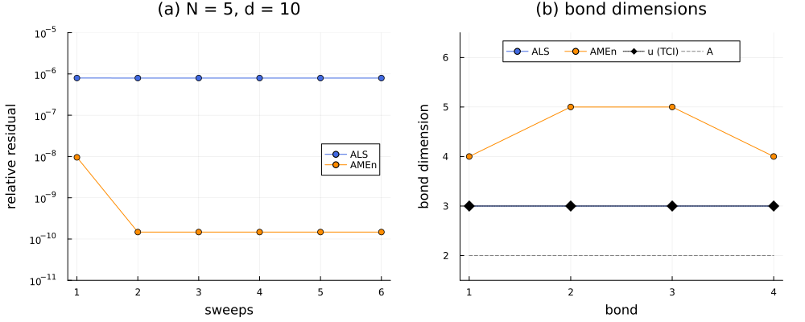

The Poisson equation in N dimensions
A grid of $n$ nodes per axis in $N$ dimensions has $n^N$ nodes, so a direct discretization of a PDE costs memory and time that grow exponentially with the dimension. In this tutorial we solve the Poisson equation
\[-\Delta u = f \quad \text{in } [0, 1]^N, \qquad u = 0 \quad \text{on the boundary},\]
in the TT format, with one site of dimension $d = n = 10$ per variable (Eq. (4) of Torrente et al., Factorized approximate inverse preconditioners in the tensor train format, "the paper"), first for $N = 5$ and then for $N = 20$. The guiding idea is that the operator has a low bond dimension and that the solution can also be approximated with a low bond dimension, independently of $N$: the Laplacian is a sum of one-dimensional operators, which the TT format stores with bond dimension 2, and the solution we choose has bond dimension 3. A solver that works on the cores of the tensor train, one or two sites at a time, then never sees more than $\mathcal{O}(N d \chi^2)$ numbers.
We first assemble the operator and the right-hand side, and check their bond dimensions. We then compute a dense reference for $N = 5$, which is still possible because the Laplacian can be diagonalized one axis at a time. With it we compare two of the alternating solvers of the library, the two-site ALS and AMEn, sweep by sweep, and finally we solve the problem in twenty dimensions.
using DifferenTT
using ITensors, ITensorMPS
using TensorCrossInterpolation: crossinterpolate2, optfirstpivot
using LinearAlgebra
using Plots
using Printf
using StableRNGs
rng = StableRNG(5);The model problem
We take the exact solution of experiments/tt_poisson/poissonNd.jl,
\[u(\mathbf{x}) = v(\mathbf{x})\, g(\mathbf{x})^2, \qquad v = \prod_{i=1}^{N} \sin(\pi x_i), \qquad g = \sum_{i=1}^{N} \sin(\pi x_i),\]
which vanishes on the boundary of the cube. Its bond dimension follows from its structure: $v$ is a product of one factor per variable, i.e. bond dimension 1, and $g^2 = \sum_i s_i^2 + 2\sum_{i<j} s_i s_j$, with $s_i = \sin(\pi x_i)$, is generated along the chain by the three partial sums $1$, $\sum_{i \le k} s_i$ and $(\sum_{i \le k} s_i)^2$, i.e. bond dimension 3. Therefore $u$ has bond dimension 3 for any $N$. The right-hand side follows from $\Delta u = v\, \Delta(g^2) + 2 \nabla v \cdot \nabla (g^2) + g^2 \Delta v$, where $\Delta v = -N\pi^2 v$, $\Delta(g^2) = 2\pi^2 \sum_i c_i^2 - 2\pi^2 g^2$ and $\nabla v \cdot \nabla(g^2) = 2\pi^2 g \sum_i c_i^2 \prod_{j \ne i} s_j$, with $c_i = \cos(\pi x_i)$.
function u_exact(x)
s = sin.(π .* x)
return prod(s) * sum(s)^2
end
function f_rhs(x)
N = length(x)
s, c = sin.(π .* x), cos.(π .* x)
v, g = prod(s), sum(s)
Δg² = 2π^2 * sum(abs2, c) - 2π^2 * g^2
∇v∇g² = 2π^2 * g * sum(c[i]^2 * prod(s[j] for j in 1:N if j != i) for i in 1:N)
return -(v * Δg² + 2∇v∇g² - N * π^2 * v * g^2)
endf_rhs (generic function with 1 method)Architecture, grid and operator
A TTArchitecture places one variable on each site, with the number of nodes of that variable as the site dimension. As explained in the tutorial on the one-dimensional problem, the Dirichlet closure places the boundary value on the first ghost node beyond the stored nodes, so the grid whose ghost nodes lie on the boundary is that of interior_grid: the 10 stored nodes of each axis sit at $h, 2h, \dots, 10h$ with $h = 1/11$, and grid coordinate 0 is the physical coordinate $h$.
N, d = 5, 10
arch = TTArchitecture(ntuple(_ -> d, N))
sites = siteinds(arch)
grid = interior_grid(arch, ntuple(_ -> 1.0, N))
h = grid.dx[1]0.09090909090909091The Laplacian of a field with homogeneous Dirichlet sides on every axis is the Kronecker sum $\Delta = \sum_{i} \mathbb{I} \otimes \cdots \otimes \partial_i^2 \otimes \cdots \otimes \mathbb{I}$ of the one-dimensional second derivatives. Adding the $N$ lifted operators would give bond dimension $N$; instead, kronecker_laplacian writes the sum directly with the cores of Kazeev & Khoromskij (2012), whose two bond states mean "no derivative placed yet" and "derivative placed" (ndim_operator_sum_mpo). We solve with the SPD operator $A = -\Delta$, built with the second-order stencil, for the reason given in the one-dimensional tutorial: with $q = 8$ the Dirichlet closure is only first-order accurate in v0.1.
bcs = BoundaryConditions(ntuple(_ -> BoundaryCond1d(DirichletBC(0.0), DirichletBC(0.0)), N)...)
field = ScalarField(sites, arch, bcs)
A = -1.0 * symmetrized_laplacian(field, grid; stencil_order=2)
linkdims(A)4-element Vector{Int64}:
2
2
2
2The right-hand side and the exact solution on the nodes are built by cross interpolation, evaluated at the physical coordinates $x_\text{grid} + h$. TCI recovers the bond dimension 3 of $u$, and finds 4 for $f$.
function tt(func)
shifted(x) = func(x .+ h)
pivot = optfirstpivot(Float64, shifted, grid, arch; rng)
tci, _, _ = crossinterpolate2(Float64, shifted, grid, arch; initialpivots=[pivot], tolerance=1e-10)
mps = MPS(tci)
replace_siteinds!(mps, sites)
return mps
end
b = tt(f_rhs)
u_tt = tt(u_exact)
linkdims(b), linkdims(u_tt)([4, 4, 4, 4], [3, 3, 3, 3])A dense reference by fast diagonalization
With $10^5$ unknowns the vectors still fit in memory, but the matrix $A$ does not. Its Kronecker structure gives the exact discrete solution anyway. Since every axis carries the same one-dimensional operator $T = Q \Lambda Q^\top$, we have
\[A = (Q \otimes \cdots \otimes Q) \left( \sum_{i=1}^{N} \mathbb{I} \otimes \cdots \otimes \Lambda \otimes \cdots \otimes \mathbb{I} \right) (Q \otimes \cdots \otimes Q)^\top,\]
where the middle factor is diagonal, with entries $\lambda_{k_1} + \dots + \lambda_{k_N}$. Applying $A^{-1}$ therefore costs one product with $Q^\top$ along each axis, a division, and one product with $Q$ along each axis. The one-dimensional operator is that of onedim_differential_operator, shown here only to build the reference; on a TT axis it returns the $d \times d$ matrix of the stencil with its closure, which we scale by $-1/h^2$.
T = -DifferenTT.onedim_differential_operator(2, arch, 1, bcs[1]; stencil_order=2) ./ h^2
λ, Q = eigen(Symmetric(T))
function along_every_axis(M, X)
for axis in 1:ndims(X)
X = mapslices(column -> M * column, X; dims=axis)
end
return X
end
function dense_poisson_solve(rhs)
B̂ = along_every_axis(Q', reshape(contract_mps(rhs), ntuple(_ -> d, N)))
denominator = [sum(λ[k] for k in Tuple(K)) for K in CartesianIndices(B̂)]
return vec(along_every_axis(Q, B̂ ./ denominator))
end
x_dense = dense_poisson_solve(b);The exact solution on the nodes needs the ordering of contract_mps, whose site 1 is the most significant index, so that the reshaped array is indexed by the sites in reverse order. The discretization error of this grid is then the relative difference between the dense discrete solution and $u$.
physical = grid.points[1] .+ h
u_nodes = vec([u_exact(reverse(physical[collect(Tuple(K))])) for K in CartesianIndices(ntuple(_ -> d, N))])
discretization_error = norm(x_dense - u_nodes) / norm(u_nodes)0.014001300205169659A relative error of about $10^{-2}$ is what a second-order stencil gives with $h = 1/11$. The solvers below should therefore reach a relative residual well below it, and their solutions should agree with x_dense to that level.
ALS versus AMEn
Both solvers sweep along the chain and solve a small local problem at every step, obtained by projecting $A \mathbf{x} = \mathbf{b}$ onto the current cores (Sec. 2.1 and Fig. 2 of the paper). They differ in how the bond dimension of the solution adapts:
ALSwith two sites (MALS, the default) solves for the merged tensor of two neighboring cores, whose dimension is $\chi^2 d^2$, and splits it by an SVD truncated tocutoff, which can raise or lower the rank.AMEn(Dolgov & Savostyanov, 2014) solves for one core at a time, a local problem of dimension $\chi^2 d$, and adapts the rank by enriching each core with up toenrichment_maxdimdirections of the local residual.
Both start from the zero MPS of bond dimension 1, solve their local SPD problems by CG, and are given the same maximum bond dimension. To follow their convergence we run each one for $k = 1, \dots, 6$ sweeps from the same start and record the relative residual. We evaluate it from the MPS of $A\mathbf{x} - \mathbf{b}$, summed exactly with alg = "directsum" and orthogonalized by QR before taking its norm. The norm of a non-orthogonal MPS is computed as $\sqrt{\langle \mathbf{r}, \mathbf{r} \rangle}$, which for a difference of two nearly equal vectors suffers from cancellation, as does the expansion of ResidualObserver, whose rounding floor is about $10^{-8}$.
updater_kwargs = LocalUpdaterArgs(; ishermitian=true, isposdef=true, rtol=1e-10)
sweep_kwargs = SweepingArgs(; nsweeps=6, maxdim=20, cutoff=1e-12)
solvers = [
"ALS" => ALS(; sweep_kwargs, updater_kwargs), "AMEn" => AMEn(; sweep_kwargs, updater_kwargs, residual_tol=1e-8)
]
difference_norm(x, y) = norm(orthogonalize(+(x, -y; alg="directsum"), 1))
relative_residual(A, x, b) = difference_norm(apply(A, x), b) / norm(b)
history = Dict(name => Float64[] for (name, _) in solvers)
for (name, solver) in solvers, k in 1:6
x = linearsolve(solver, A, b, nothing; nsweeps=k)
push!(history[name], relative_residual(A, x, b))
end
for (name, _) in solvers
println(rpad(name, 6), join((@sprintf("%.1e", r) for r in history[name]), " "))
endALS 8.0e-07 8.0e-07 8.0e-07 8.0e-07 8.0e-07 8.0e-07
AMEn 9.6e-09 1.5e-10 1.5e-10 1.5e-10 1.5e-10 1.5e-10We then compare the solutions after six sweeps: their bond dimensions, their distance to the dense reference, and the time per solve (measured after a first call, which compiles the code).
solutions = Dict{String,MPS}()
for (name, solver) in solvers
linearsolve(solver, A, b, nothing)
elapsed = @elapsed solutions[name] = linearsolve(solver, A, b, nothing)
x = solutions[name]
@printf(
"%-5s χ = %s, ‖x - x_dense‖/‖x_dense‖ = %.1e, ‖x - u‖/‖u‖ = %.1e, %.2f s\n",
name,
linkdims(x),
norm(contract_mps(x) - x_dense) / norm(x_dense),
norm(contract_mps(x) - u_nodes) / norm(u_nodes),
elapsed
)
endALS χ = [3, 3, 3, 3], ‖x - x_dense‖/‖x_dense‖ = 9.2e-08, ‖x - u‖/‖u‖ = 1.4e-02, 0.12 s
AMEn χ = [4, 5, 5, 4], ‖x - x_dense‖/‖x_dense‖ = 4.2e-11, ‖x - u‖/‖u‖ = 1.4e-02, 0.02 sBoth solvers reach the discrete solution far below the discretization error, but they stop at different residuals. MALS reaches a residual of $8 \cdot 10^{-7}$ in its first sweep and stays there, with the bond dimension 3 of $u$, while AMEn goes down to about $10^{-10}$ with bond dimensions 4 and 5. The reason lies in the discrete solution, which is not exactly of bond dimension 3. Its singular values at bond 2 show this:
σ = svdvals(reshape(x_dense, d^(N - 2), d^2))
σ[1:5] ./ σ[1], sum(abs2, σ[4:end]) / sum(abs2, σ)([1.0, 0.007012980302837627, 3.202064246889174e-5, 7.521482327183774e-8, 4.885018422007151e-10], 5.6572300361142706e-15)The directions beyond the third carry a relative weight of about $6 \cdot 10^{-15}$, below the cutoff of $10^{-12}$, so the SVD of MALS discards them. Their effect on the residual is much larger, since $A$ amplifies the oscillatory directions more than the smooth ones, by up to the condition number $\kappa(A)$, the ratio of the extreme eigenvalues of $T$:
λ[end] / λ[1]48.374150078706485A truncation by singular values controls the error in $\mathbf{x}$, not the residual. This is the motivation of the residual-based truncation of ResidualALS (Oseledets & Dolgov, 2012), the MALS variant of the paper's experiments, which the one-dimensional tutorial uses. AMEn chooses the rank of each core by its local residual as well, which is why it keeps the fourth and fifth directions. Its local problems are moreover a factor $d = 10$ smaller than those of MALS, which makes it the cheaper option when $d$ or $\chi$ is large.
Twenty dimensions
Nothing in the construction depends on $N$, so we now repeat the solve with $N = 20$, for which the grid has $10^{20}$ nodes. There is no dense reference any more, so we measure the error against the cross interpolation of $u$, in the TT format.
N20 = 20
arch20 = TTArchitecture(ntuple(_ -> d, N20))
sites20 = siteinds(arch20)
grid20 = interior_grid(arch20, ntuple(_ -> 1.0, N20))
bcs20 = BoundaryConditions(ntuple(_ -> BoundaryCond1d(DirichletBC(0.0), DirichletBC(0.0)), N20)...)
A20 = -1.0 * symmetrized_laplacian(ScalarField(sites20, arch20, bcs20), grid20; stencil_order=2)
function tt20(func)
shifted(x) = func(x .+ h)
pivot = optfirstpivot(Float64, shifted, grid20, arch20; rng)
tci, _, _ = crossinterpolate2(Float64, shifted, grid20, arch20; initialpivots=[pivot], tolerance=1e-10)
mps = MPS(tci)
replace_siteinds!(mps, sites20)
return mps
end
b20, u20 = tt20(f_rhs), tt20(u_exact)
for (name, solver) in solvers
elapsed = @elapsed x = linearsolve(solver, A20, b20, nothing; nsweeps=10)
@printf(
"%-5s residual %.1e, χ = %2d, ‖x - u‖/‖u‖ = %.1e, %.2f s\n",
name,
relative_residual(A20, x, b20),
maxlinkdim(x),
difference_norm(x, u20) / norm(u20),
elapsed
)
endALS residual 8.5e-06, χ = 2, ‖x - u‖/‖u‖ = 8.9e-03, 0.28 s
AMEn residual 3.3e-07, χ = 4, ‖x - u‖/‖u‖ = 8.9e-03, 0.11 sBoth solves take a fraction of a second, and the error against $u$ is again that of the second-order stencil. The two-site ALS, however, ends with bond dimension 2 and a residual about 25 times larger than that of AMEn: its truncation by singular values discards, as for $N = 5$, directions that matter for the residual, and the sweeps do not recover them. AMEn adds them back from the residual, and does not depend on the SVD to grow the rank.
Summary
The figure shows (a) the residual of the two solvers after each sweep for $N = 5$, and (b) the bond dimensions of their solutions next to those of the exact $u$ and of the operator.
colors = Dict("ALS" => :royalblue, "AMEn" => :darkorange)
panel_a = plot(;
yscale=:log10,
ylims=(1e-11, 1e-5),
yticks=10.0 .^ (-11:-5),
xlabel="sweeps",
ylabel="relative residual",
title="(a) N = 5, d = 10",
legend=:right,
)
for (name, _) in solvers
plot!(panel_a, 1:6, history[name]; label=name, marker=:circle, color=colors[name])
end
bonds = 1:(N-1)
panel_b = plot(;
xlabel="bond",
ylabel="bond dimension",
title="(b) bond dimensions",
xticks=bonds,
ylims=(1.5, 6.5),
legend=:top,
legendcolumns=4,
)
for (name, _) in solvers
plot!(panel_b, bonds, linkdims(solutions[name]); label=name, marker=:circle, color=colors[name])
end
plot!(panel_b, bonds, linkdims(u_tt); label="u (TCI)", marker=:diamond, markersize=7, color=:black, linestyle=:dot)
plot!(panel_b, bonds, linkdims(A); label="A", linestyle=:dash, color=:gray)
plot(panel_a, panel_b; layout=(1, 2), size=(1000, 400), margin=5Plots.mm)